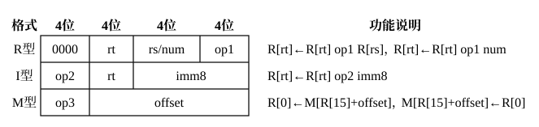
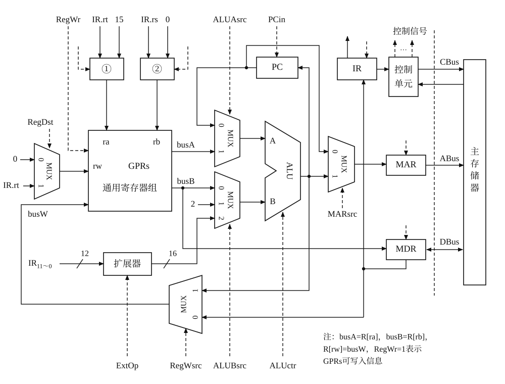

2026-44
数据通路的功能和基本结构控制器的功能和工作原理补充条件（来源：2026 年第 43 题）
某 16 位计算机 C 按字节编址，通用寄存器 R0～R15 的编号为 0～15，存储器地址为 16 位，采用定长指令字，指令格式有 R、I 和 M 型，如下所示。

其中，op1 为 0001、0010 分别表示加、左移指令，op2 为 0100 表示加立即数指令，op3 为 1110、1111 分别表示取数、存数指令，R[r] 表示寄存器 r 中的内容，num 为移位位数，M[addr] 表示存储器地址 addr 中的内容。
本题题干
假定题 43 中计算机 C 的部分数据通路如题 44 图所示。

图中带箭头虚线表示控制信号，IR.rt、IR.rs 分别表示 IR 中的 rt、rs 字段，IR11∼ 0 为 IR 中低 12 位。要求取指令周期内完成 PC 增量操作。请回答下列问题。
（1）题 44 图中①和②是同一类部件，其名称是什么？（1 分）
（2）已知 I 型指令中 imm8 可以是带符号整数或无符号整数，M 型指令中 offset 是带符号整数，控制信号 ExtOp 至少有几位？为什么？（2 分）
（3）取指周期中，MARsrc、ALUAsrc、ALUBsrc、RegWr 的取值各是什么？（4 分）
（4）左移指令执行周期中，ALUBsrc、RegWsrc、RegDst、RegWr 的取值各是什么？ExtOp 是否可以与 M 型指令的 ExtOp 取值相同？为什么？（6 分）
（1）①和②处是多路选择器。
（2）ExtOp 至少有 2 位。因为至少需要定义 3 种位扩展情况，故 ExtOp 至少需要 2 位编码。
（3）取指周期中 MARsrc = 0、ALUAsrc = 0、ALUBsrc = 01、RegWr = 0。
（4）左移指令执行周期中 ALUBsrc = 10、RegWsrc = 1、RegDst = 1、RegWr = 1。ExtOp 可以与 M 型指令的 ExtOp 取值相同。因为左移指令中 num 为 IR7∼ 4，扩展器对 IR11∼ 0 采用符号扩展还是零扩展，都不会影响 IR7∼ 4，故左移指令执行时 ExtOp 取值可任意，因此可以与 M 型指令的 ExtOp 取值相同。
本题讲解：数据通路的部件识别与控制信号取值
第 0 步：底层机制——数据通路 = 存储部件 + 运算部件 + 选择部件
先立模型。数据只能沿固定导线流动，这条通路由三类部件搭成：
- 存储部件：PC、IR、GPRs（通用寄存器组，读端口 ra/rb、写端口 rw）、MAR、MDR；
- 运算部件：ALU（A、B 两个输入端）、扩展器（把 IR11~0 这 12 位扩成 16 位，怎么扩由 ExtOp 控制）；
- 选择部件：一组多路选择器（MUX）加写使能。MUX 决定"谁上路"，写使能决定"谁落笔"。
图中几处关键选择点（后面逐问对号入座）：
| 选择点 | 输入选项 | 控制信号 |
|---|---|---|
| GPRs 读端口 ra | IR.rt 或 15（M 型访存基址固定 R15） | ①（MUX） |
| GPRs 读端口 rb | IR.rs 或 0（M 型存数固定读 R0） | ②（MUX） |
| GPRs 写端口 rw | 0 或 IR.rt | RegDst |
| ALU 的 A 端 | PC（输入 0）或 busA（输入 1） | ALUAsrc |
| ALU 的 B 端 | busB（0）、常数 2（1）、扩展器输出（2） | ALUBsrc（两位编码 00/01/10） |
| MAR | PC（0）或 ALU 输出（1） | MARsrc |
| busW（写 GPRs 的数据） | ALU 输出（1）或 MDR（0） | RegWsrc |
预答一个总问题：为什么连"PC 加 2"都要用 ALU？ 这条通路只有 ALU 一个运算部件，没有专用加法器——取指周期"顺路"让 A 端接 PC、B 端接常数 2，ALU 算出 PC+2 经 PCin 写回 PC。这也解释了取指周期 A、B 端选择信号的取值为什么是"接 PC"和"接常数 2"。
第（1）问（1 分）：①②是什么部件
都是多路选择器（MUX）。识别特征：多根输入线汇到一个选择符号、单线输出、由控制信号选通。为什么 GPRs 的读端口前必须放它：ra/rb 的来源不止一种——执行 R 型时来自 IR.rt/IR.rs，M 型访存时要固定成 15/0——端口只有一个，必须"选"。
第（2）问（2 分）：ExtOp 至少几位
扩展器的输入固定是 IR11~0，但"扩成 16 位"的正确做法取决于字段语义，共 3 种互不相同的动作：
- I 型 imm8 为无符号数：对低 8 位 IR7~0 零扩展（bits15~8 补 0）；
- I 型 imm8 为带符号数：对 IR7~0 符号扩展（bits15~8 补 IR7）；
- M 型 offset 为带符号数：对 IR11~0 整体符号扩展（bits15~12 补 IR11）。
为什么不能合并成两种？ 若 I 型带符号 imm8 也按 IR11~0 整体做符号扩展，高位补的是 IR11（那是 rt 字段的最高位）而不是 IR7——例如 imm8=FFH（−1）会被扩成 000FH（+15）而不是 FFFFH（−1），数值全错。所以 I 型带符号必须单列。
为什么 1 位不够、2 位够？ 1 位只有 2 种编码，装不下 3 种动作；2 位有 4 种 ≥ 3。故 ExtOp 至少 2 位。
第（3）问（4 分）：取指周期
叙事先行——取指周期要同时干两件事：把 M[PC] 读进 IR，并在同一周期完成 PC 增量（题设要求）。顺着数据流走一遍：MARsrc=0 让 MAR←PC；主存按该地址读出指令，经 DBus/MDR 写入 IR；与此同时 ALUAsrc=0 让 A 端接 PC、ALUBsrc=01 让 B 端接常数 2，ALU 输出 PC+2 经 PCin 写回 PC。
为什么 RegWr=0：取指不写 GPRs。此刻 IR 里是刚取来的指令本身，若写使能开着，指令字会被当成数据写进寄存器组，直接污染现场——写使能默认关闭、按需置 1 是控制信号设计的通行原则。
| 信号 | 取值 | 作用 |
|---|---|---|
| MARsrc | 0 | MAR←PC，给出取指地址 |
| ALUAsrc | 0 | A 端接 PC，供增量运算 |
| ALUBsrc | 01 | B 端接常数 2（输入 1 的两位编码） |
| RegWr | 0 | 本周期不写通用寄存器 |
第（4）问（6 分）：左移指令执行周期
左移是 R 型：R[rt] ← R[rt] 左移 num 位，num 藏在 rs/num 字段即 IR7~4。数据流：① 选 IR.rt 作 ra，busA=R[rt] 进 A 端；移位量不在任何寄存器里、只在指令里 → 只能取自扩展器输出，ALUBsrc=10（B 端输入 2 的编码）；扩展器把 IR11~0 补满 16 位后其 bits7~4 恰是 num，移位部件从中取量；结果从 ALU 输出走 busW 写回 GPRs，目的寄存器是 rt。
| 信号 | 取值 | 作用 |
|---|---|---|
| ALUBsrc | 10 | B 端接扩展器输出（输入 2），其 bits7~4 为 num |
| RegWsrc | 1 | busW←ALU 输出（本指令不访存，不经 MDR） |
| RegDst | 1 | rw←IR.rt，结果写回 rt |
| RegWr | 1 | 结果落笔 |
为什么 RegDst=1：目的寄存器是 rt，不是固定编号——正因为 R 型的写回位置随指令变，而 M 型固定用 R0/R15，RegDst 这个选择器才需要"IR.rt"这个输入。
ExtOp 可以与 M 型指令取值相同吗？——可以。 扩展器动的是 IR11~0 的高位：符号扩展补 IR11 的副本、零扩展补 0，都只改 bits15~12；IR7~4 在任何一种扩展下都原样保留在扩展结果的 bits7~4 上。左移量恰取自 bits7~4，两种扩展给出一模一样的移位量——左移指令对 ExtOp 取值不敏感，取任意值（含与 M 型相同的那个）都正确。
易错点
- 取指周期 MARsrc 选成 1：ALU 输出是 PC+2，读指令必须用 PC 本身，对应 MARsrc=0。
- ALUBsrc 写成一位：它面对 3 个输入，是两位编码 00/01/10；其余信号多为一位 0/1。
- 左移指令 RegDst 忘置 1：结果要写 rt，写错就落到 R0。
- 以为左移必须指定扩展方式：扩展只动高位、不影响 IR7~4，ExtOp 取值任意。
记忆锚点：MUX 管"谁上路"、写使能管"谁落笔"；取指 = MAR←PC + ALU 算 PC+2；移位量藏在指令里 → 走扩展器 → ALUBsrc=10；扩展只动高位、IR7~4 永不动 → 左移不挑 ExtOp。